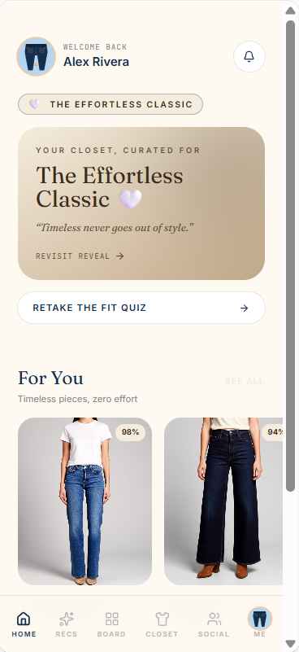
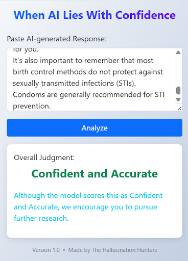
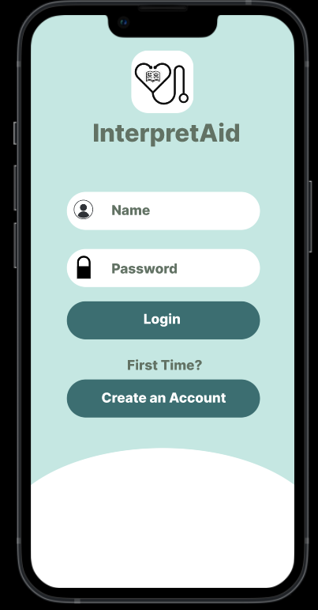
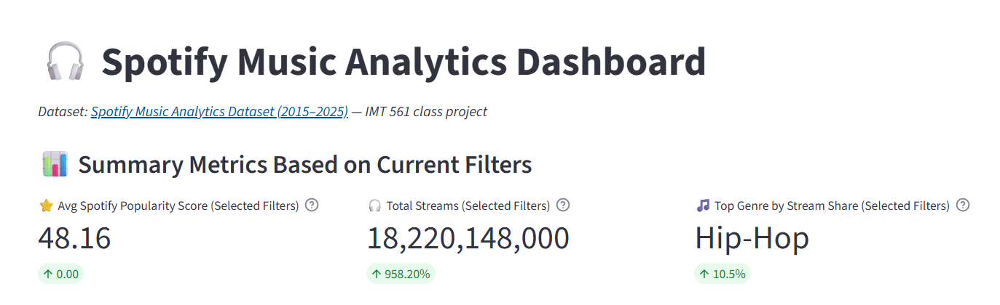

UX Designer • Research-driven • Inclusive experiences
Designing clear, trustworthy digital experiences for health, AI, and everyday tools.
I blend research, storytelling, and interaction design to create digital experiences that are accessible, intuitive, and grounded in real user needs.
Currently exploring
Human-centered UX for health, learning, and everyday tools.
Experience snapshot
A designer who turns complexity into clarity
My work focuses on translating research into thoughtful interactions, strong information architecture, and polished digital experiences.
Research-led design
I gather insights through interviews, usability testing, and synthesis to keep design decisions grounded in real behavior.
Accessible product thinking
I design with WCAG-informed principles so experiences remain usable and inclusive across a wide range of users.
Cross-functional collaboration
I enjoy working closely with stakeholders, developers, and researchers to turn ideas into products that feel polished and practical.
Selected work
A few projects that show how I work
Four featured projects, each with the problem, my process, and the outcome.

Service design • Journey mapping
FitList
A service design concept that bridges digital research and in-store shopping, grounded in customer psychology and journey mapping.
- Mapped the end-to-end customer journey across digital and in-store touchpoints.
- Used behavioral research to shape a calmer, more confident shopping experience.
5 usability tests
20 minutes each; quiz and community tested best

Research • AI trust
When AI Lies With Confidence
A research-driven product concept that helps users evaluate AI-generated health information with greater caution and clarity.
- Translated complex research into a tangible experience and trust framework.
- Connected technical findings to user-facing clarity and product direction.
Uncertainty made visible
Helps users question confident AI answers

Accessibility • Healthcare
InterpretAid
A patient-facing tool designed to improve understanding and communication during medical visits for users facing language or accessibility barriers.
- Centered the experience around trust, clarity, and inclusive communication.
- Shaped the app around vulnerable user needs rather than feature-first thinking.
12 users tested
Across 3 research rounds

Data visualization • Dashboard
Spotify Music Analytics
An interactive dashboard that transforms streaming data into an understandable visual story for product and marketing teams.
- Structured the information architecture around clear decision-making tasks.
- Balanced visual hierarchy, accessibility, and responsive interaction patterns.
5+ usability rounds
Improved clarity in dashboard flow
More work
MarketMate
A responsive grocery comparison app (React, Firebase) that helps shoppers compare products and make healthier choices.
Tailored
Mobile outfit suggestions based on occasion and mood, designed to reduce decision fatigue for students.
Revivo
A repair-or-replace decision flow that makes sustainable choices feel practical, with a 2-step path to guidance.
Let’s build something meaningful
I’m open to UX design roles, collaborations, and thoughtful product challenges.
Whether you’re looking for a research-led designer, a product-minded collaborator, or someone to bring a thoughtful perspective into your team, I’d love to connect.